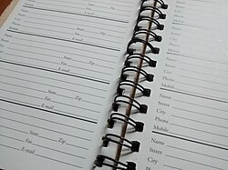
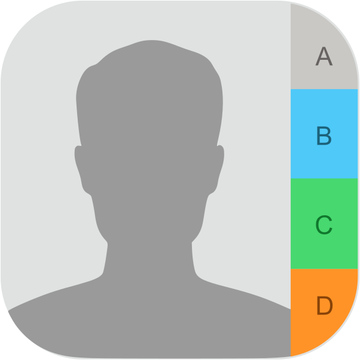

Mucho antes de que existieran las agendas digitales, las personas organizaban sus vínculos en libretas, ficheros y directorios telefónicos. Allí se anotaban nombres, direcciones, teléfonos del hogar, lugares de trabajo y, más tarde, números de fax y correo electrónico. Estos sistemas eran simples, pero introdujeron una idea central de la vida moderna: convertir la red de relaciones personales en información consultable.

Con la expansión de las computadoras personales y los asistentes digitales, esa información dejó de estar atada al papel. Las agendas electrónicas permitieron buscar contactos en segundos, corregir datos sin reescribir páginas enteras y sumar nuevos campos: empresa, cumpleaños, varias líneas telefónicas o notas. El contacto dejó de ser un apunte fijo y pasó a convertirse en un registro editable, transportable y cada vez más conectado con otros sistemas.

El teléfono móvil absorbió esa función y la llevó mucho más lejos. Hoy, la lista de contactos no es solo una agenda: también organiza llamadas, mensajes, videollamadas, correo, mapas, redes sociales y perfiles compartidos. Un mismo nombre puede reunir número, foto, ubicación, historial de conversaciones y múltiples canales de comunicación.
Esta convergencia transforma al celular en una interfaz de relaciones humanas. Lo que antes requería una libreta, una guía telefónica y memoria personal, hoy vive en una base de datos portátil que se actualiza en tiempo real y acompaña al usuario a todas partes.